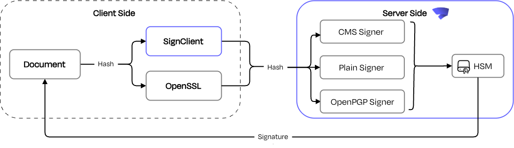

Client-side Hashing
Client-side hashing, also called hash signing, allows the hash of a file to be computed locally and sent to SignServer, rather than uploading the entire file. This is especially useful for large files such as executables, software releases, virtual machines, or container images, where transferring the full file would add unnecessary overhead.
The following diagram shows a example client-side hashing flow:

The signature format determines how straightforward the client-side hashing is. For detached formats, such as Plain and CMS Detached signatures, the hash is all SignServer needs, and the result is a separate signature file.
For embedded formats, such as Authenticode, JAR, and APK signing, the signature must be inserted back into the original file, which requires additional preparation and embedding steps on the client side. SignClient, the SignServer command-line client, handles this preparation and embedding automatically, making client-side hashing for complex file formats practical without requiring custom integration logic. See Embedded Signature Formats.
The following describes various options for performing the hashing on the client-side instead of following all the steps in the signing on the server-side.
For setup instructions for each of these formats, see Code Signing with Client-side Hashing.
CMS Detached Signatures
Detached signatures can be stored in a separate file, so the original file remains unchanged. The CMS signature structure covers a set of attributes, unless it is a direct signature. To create a detached CMS signature, you only need the hash of the original file.
For setup information, see Signing CMS Detached Signatures.
Plain Signatures
For plain signatures, as produced by the Plain Signer, generally the whole file is sent to the signer and returned is the small signature. However, as the plain signature schemes involve a hash operation, it is possible to perform that on the client-side.
SignServer supports the following two options of using plain signatures with client-side hashing:
Explicitly specifying client-side hashing using request metadata properties: Recommended. Supported for algorithms RSASSA-PKCS1_v1.5, RSASSA-PSS, ML-DSA External μ, and ECDSA, for known hash algorithms.
Implicitly using client-side hashing without request metadata properties: Legacy. Supported for RSASSA-PKCS1_v1.5, ML-DSA External μ, and ECDSA, but not for RSASSA-PSS.
For setup information, see Signing Plain Signatures.
ML-DSA External μ Plain Signatures
enterprise
A client-side hashing option when using ML-DSA keys. The data or file is structured together with a provided public key in base64 encoding to calculate an External μ value, which is then signed on the server-side. Currently only supported for the Plain Signer.
For setup information, see Signing with ML DSA External μ.
Embedded Signature Formats
For signature formats where the signature is to be placed within the original document, additional logic has to be implemented on the client-side in order to, typically, first prepare the document for signing, compute the digest and send it to the server, and then finally embed the signature within the file.
On the client-side, support has been implemented for "client-side hashing and construction" for various signature formats such as Java Archives (.jar, .apk,...), and Authenticode signing of Portable Executable (PE) files (.exe, .dll,…) and Windows Installer files (MSI). Support for other file types such as PDF may also be implemented.
On the server-side, support for Authenticode signing uses the MS Authenticode CMS Signer, and support for JAR signing uses the JArchive CMS Signer. The MS Authenticode Signer supports PE (.exe, .dll, …), MSI, PS1, and CAB files.
For setup information, see Signing Embedded Signature Formats.
OpenPGP Signing
enterprise
The client-side hashing and construction with OpenPGP uses the OpenPGP Plain Signer. For setup information, see Signing OpenPGP Files.
Debian Dpkg-sig Signing
enterprise
The client-side hashing and construction with Dpkg-sig uses the OpenPGP Plain Signer. For setup information, see Signing Debian Dpkg sig Files.
DNSSEC Signing
enterprise
The client-side hashing and construction for DNSSEC zone file signing uses the ZoneHash Signer. For setup information, see Signing DNSSEC Files.
APPX Signing
enterprise
The client-side hashing and construction for .appx file signing uses the APPX CMS Signer. For setup information, see Signing APPX Files.